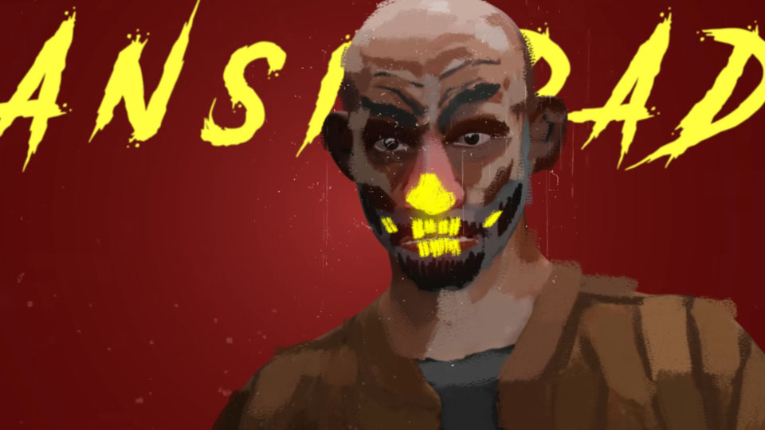
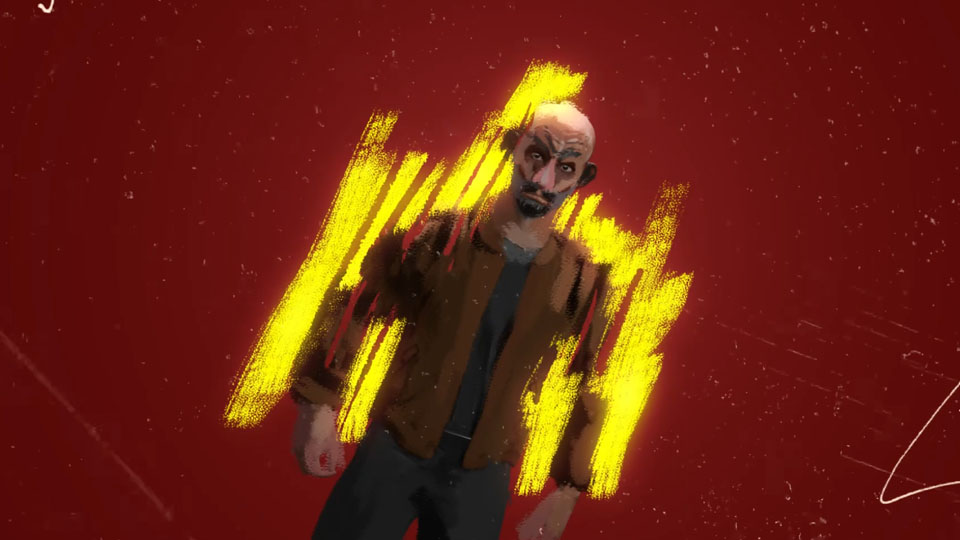
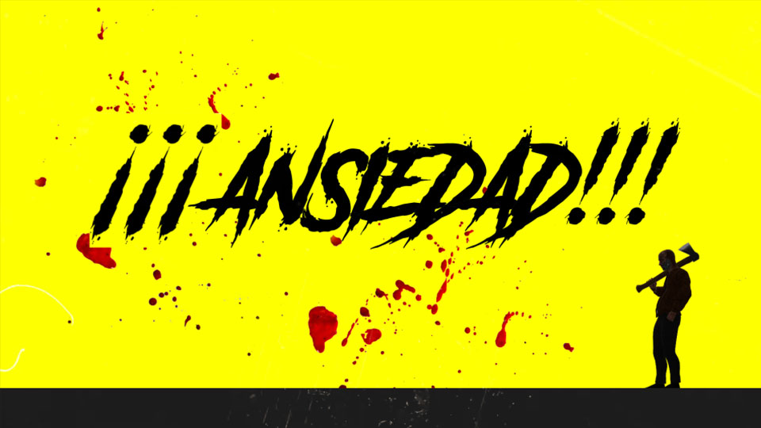

Animación · Videoclip experimental
Ansiedad
Videoclip de animación que combina 2D y 3D sobre música punk. Un desarrollo enfocado en explorar las emociones y en cómo transmitirlas desde un contexto artístico crudo, acelerado y expresivo.
Lenguaje visual
Una tensión entre lo gráfico, lo volumétrico y lo emocional
La propuesta mezcla recursos bidimensionales y tridimensionales para crear un ritmo visual inquieto, cercano al pulso del punk. Cada imagen funciona como una exploración de gesto, textura y energía emocional.
Galería
Fotogramas y exploraciones





Video